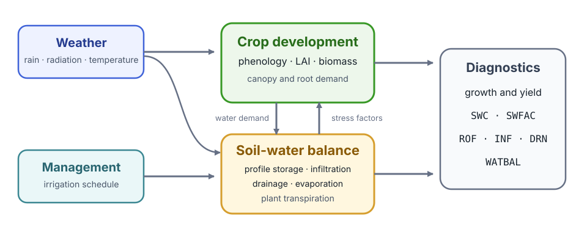
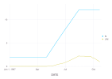
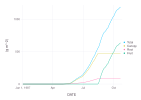
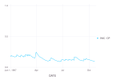

SimpleCrop
SimpleCrop.jl is a compact, executable crop model assembled from phenology, canopy, biomass partitioning, weather, and soil-water components. This tutorial follows the short integration case in Cropbox's test/examples/simplecrop.jl, then reads its output from the perspective of the crop as a whole.
SimpleCrop follows the intentionally simplified model in the official DSSAT teaching material, A Modular Approach to Structure Crop Models. It is useful for learning how components exchange values and how a complete simulation is organized; it is not a fully parameterized production model.

Weather and management supply the environment. Crop development, canopy, biomass, and below-ground water balance advance together, while diagnostic variables expose the resulting state.
Load the example inputs
The package test data contain daily weather and irrigation tables.
using Cropbox
using SimpleCrop
using CSV
using DataFrames
loaddata(name) = CSV.File(
joinpath(dirname(pathof(SimpleCrop)), "../test/data", name)
) |> DataFrame
weather = loaddata("weather.csv")
irrigation = loaddata("irrigation.csv")
(weather = first(weather, 3), irrigation = first(irrigation, 3))(weather = 3×6 DataFrame
Row │ DATE (:Date) SRAD (MJ/m^2/d) TMAX (°C) TMIN (°C) RAIN (mm/d) PAR ( ⋯
│ Date Float64 Float64 Float64 Float64 Float ⋯
─────┼──────────────────────────────────────────────────────────────────────────
1 │ 1986-01-01 6.3 22.8 13.9 22.6 ⋯
2 │ 1986-01-02 6.3 20.6 12.8 0.0
3 │ 1986-01-03 6.2 20.6 13.3 0.3
1 column omitted, irrigation = 3×2 DataFrame
Row │ DATE (:Date) IRR (mm/d)
│ Date Int64
─────┼──────────────────────────
1 │ 1986-01-01 0
2 │ 1986-01-02 0
3 │ 1986-01-03 0)The annotated CSV headers retain dates, units, and column types. Cropbox normalizes them when the corresponding provide and drive variables are constructed.
Configure and run the model
config = @config (
Clock => :step => 1u"d",
Calendar => :init => ZonedDateTime(1987, 1, 1, tz"UTC"),
SimpleCrop.Weather => :weather_data => weather,
SimpleCrop.SoilWater => :irrigation_data => irrigation,
)
result = simulate(SimpleCrop.Model;
config,
stop = :endsim,
)
(rows = nrow(result), start = first(result.DATE), finish = last(result.DATE))(rows = 294, start = Date("1987-01-01"), finish = Date("1987-10-21"))This is the same execution path exercised by the framework test. :endsim is a flag declared by the model, so the biological state rather than a hard-coded number of days determines when the run stops.
Read development and canopy growth
N is leaf number and LAI is leaf area index. They provide a quick check that phenology and canopy development are advancing together.
visualize(result,
:DATE,
[:N, :LAI];
kind = :line,
)
The test suite plots LAI; displaying N beside it adds the developmental context needed to interpret the canopy trajectory.
Read biomass partitioning
W is total dry biomass. The component pools Wc, Wr, and Wf represent canopy, root, and fruit biomass.
visualize(result,
:DATE,
[:W, :Wc, :Wr, :Wf];
names = ["Total", "Canopy", "Root", "Fruit"],
kind = :line,
)
Read these curves together with development and LAI: a change in allocation is part of the crop's developmental program, not just a final yield calculation.
Check one coupled environmental state
The integration test also plots stored soil water SWC divided by profile depth DP.
visualize(result,
:DATE,
:(SWC / DP);
yunit = u"mm^3/mm^3",
kind = :line,
)
This plot confirms that the environmental component is connected and evolving during the crop run. It is not intended as a stand-alone validation of a layered soil-water algorithm. For the separate multi-layer implementation in Cropbox's own test suite, continue with Soil Water Transport.
What this example establishes
The short test demonstrates the complete integration path:
- tabular weather and management data enter through configuration;
- a daily clock advances all model components;
- phenology, canopy, biomass, and environmental states remain coupled;
- a model-declared flag stops the simulation; and
- the resulting table can be inspected or visualized without model-specific plotting code.
Use the model's own repository for cultivar parameters and scientific changes. Use Cropbox's configuration, simulation, and visualization pages for framework-level options.